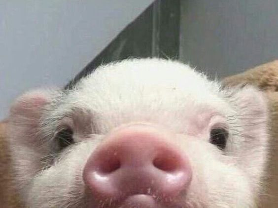

AURIAT Tristan tristan.auria@gmail.com
06 59 44 29 66
XX rue de l'avenir 91550

Formation
2011-AUJ
2009-2011
2005-2008
EDMEC Business School Lille, France Programme grande écolde de trois ans menant à un mastère en management
Lycée Dumont d'Urville, Toulon, France Classe préparatoire aux grandes écoles de commerce, option scientifique (ECS)
Lycée Dumont d'Urville, Toulon, France Baccalauréat scientifique spécialité mathématiques.
Expériences professionnelles
2014-Présent
2011-2018 6mois
2012-2018 (14 mois)
Pierre-giraud.fr Création du site pierre-giraud.fr : tutoriels de programmation et conseils en e-commerce, e-marketing et référencement.
PrestaShop, service Addons Chargé de développer la plateforme Addons à l'international. Réflexion sur l'optimisation de la plateforme et coordiantion du travail avec 7 dévleoppeurs. Validation modules et thèmes.
Clike-us.fr Création du service Clike-us.fr, plateforme d'échange de "j'aime" et "followers" pour accroître la légitimité des PME sur internet et les réseaux sociaux.
Langues étrangères & compétences informatiques
Anglais : Espagnol :
Informatique
Courant(TOEIC :(910)
Bonne connaissance
Maîtrise des logiciels Excel, PowerPoint, Word, Adobe Photoshop, Illustrator, Audition Acrobat et Fireworks, MAîtrise du HTML,CSS,PHP,MySQL et JavaScript
Autres expériencess et centres d'intérêt
2011-2018
Mai 2012 (24 Juin)
Intérêts
Membre d'Ecothink-EDMEC, association de développement durable Chargé de la maintenance du site Internet de l'association et prospection en vue de la réalisation de bilans carbone.
Madhya Prodesh,inde Participation bénévole à la construction d'une ferme écologique et durable
Informatique: d'ouvrages sur le e-commerce, le reférencement et les langages et programmation.
Membre d'Ecothink-EDMEC, association de développement durable: Pratique de la guitare depuis 10 ans
Triathlon: Champion régional junior en 2008